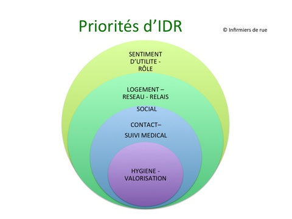

Infirmière De Rue
Ensemble, mettre fin au sans abrisme.
Qui sommes nous ?
Ensemble, mettons fin au sans-abrisme! IDR est une organisation médico-sociale convaincue que la fin du sans-abrisme à Bruxelles est possible. Elle y contribue en sortant de la rue les personnes sans-abri les plus vulnérables en terme de santé, et en mobilisant les associations et le public pour trouver des solutions durables à la problématique du sans-abrisme. L’approche par l’hygiène, la valorisation de talents des personnes sans-abri, l’implication intensive du réseau d’associations sociales & médicales et la création de logements, sont les leviers qu’utilise IDR pour parvenir à la réinsertion durable en logement. IDR partage son expertise et son expérience afin de renforcer tous les acteurs qui, soit interviennent pour réintégrer des personnes vulnérables, soit agissent de façon préventive pour éviter que des personnes précarisées tombent dans la marginalité. Une urgence ? Cliquer ici Triple action : le suivi des patients de la rue jusqu’au logement, des formations pour les professionnels et la création d’outils d’information et de sensibilisation.
IDR s'engage à être un acteur enthousiasmant, fédérateur et innovant dans l’action pour mettre fin au sans-abrisme. IDR partage son expertise et son expérience afin de renforcer tous les acteurs qui, soit interviennent pour réintégrer des personnes vulnérables, soit agissent de façon préventive pour éviter que des personnes précarisées tombent dans la marginalité. Triple action : le suivi des patients de la rue jusqu’au logement, des formations pour les professionnels et la création d’outils d’information et de sensibilisation.
But principal: Modèle housing First
Les projets basés sur le modèle Housing First (Tsemberis & al. 2004) ciblent des personnes sans-abri cumulant précarité sociale, maladie mentale, assuétudes et affections physiques, et font le pari que leur accès et leur maintien en logement sont non seulement possibles mais également souhaitables. Le logement est individuel et à loyer modéré. Il est accessible immédiatement depuis la rue ou les services d’urgence, sans condition de traitement ni d’abstinence, via un bail standard (illimité dans le temps) et dispersé dans la ville. L’expulsion a lieu uniquement en cas de non-respect des règles de la location. L’accompagnement est potentiellement intensif, mobile et sur mesure, fait par une équipe pluridisciplinaire. Le suivi est proposé aussi longtemps que nécessaire (même après expulsion).
Comment nous aider ? Proposer un logement Nous sommes actuellement à la recherche de propriétaires privés solidaires, ainsi que de partenariats avec des AIS, SISP, communes et CPAS de la Région Bruxelloise pouvant louer des studios ou appartements aux bénéficiaires du projet. Le housing First, ça marche! Les anciens sans-abri retrouvent leur estime de soi et se réinsèrent peu à peu dans la société. Nos résultats sont très positifs avec 96% des loyers qui sont payés à temps et 92% de taux de maintien en logement. Nous prenons en charge de manière sérieuse et proactive les relations avec le voisinage.Formations proposées
Pour Qui ?
Pour tout acteurs susceptibles d'être confrontés à des personnes en précarité
Objectifs: Module hygiène et Module précarité
- Comment conseiller à quelqu’un de se laver ?
- Comment désarmer la crainte de mal faire ou de blesser l’autre ?
- Comment bien cerner les différents stades de vulnérabilité?
- Comment ouvrir la discussion et appliquer les méthodes adéquates pour aider la personne, sans lui faire perdre la face?
Quoi?
formations pour préparer et aider les professionnels (infirmiers et futurs infirmiers, travailleurs sociaux, agents de sécurité et de nettoyage, ...) à prendre en charge ce type de patient et à aborder plus facilement les thèmes de l’hygiène et de la santé. Chaque année, IDR réalise, en outre, des sessions de sensibilisation auprès d’étudiants dans les écoles d’infirmiers. En 2017, IDR donnera environ 20 modules de formation, et touchera ainsi une centaine de professionnels.
Quand?
- 7 juin 2018 : 1 jour de 9h30 à 16h30 (en 1 jour)
Informations supplémentaires:
- 4 et 18 octobre 2018: de 9h30 à 16h30 (en 2 jours)
- 15 novembre: de 9h30 à 16h30 (en 1 jour)
Nos histoires
from Infirmiers de rue ASBL on Vimeo.
L'histoire de JacquesFiches informatives
Asbl Infirmiers de rue
Rue Gheude 21-25/4
1070 Bruxelles
Voir le plan
Attention: nous ne recevons pas les patients au bureau.
Tel. Général: 02/265 33 00
Tel. Administration, Finances et Communication: 0477/483 150
Tel. Suivi des patients: 0488/119 355; 02/265 33 00
Fax: 02/502.67.04
Respect de la vie privée https://www.facebook.com/infirmiersderue
HORAIRE: Du lundi au vendredi de 9h à 13h et de 14h à 17h30
Formations proposées
Pour Qui ?
Pour tout acteurs susceptibles d'être confrontés à des personnes en précarité
QUoi? formations pour préparer et aider les professionnels (infirmiers et futurs infirmiers, travailleurs sociaux, agents de sécurité et de nettoyage, ...) à prendre en charge ce type de patient et à aborder plus facilement les thèmes de l’hygiène et de la santé. Chaque année, IDR réalise, en outre, des sessions de sensibilisation auprès d’étudiants dans les écoles d’infirmiers. En 2017, IDR donnera environ 20 modules de formation, et touchera ainsi une centaine de professionnels.
Où?
Quand?